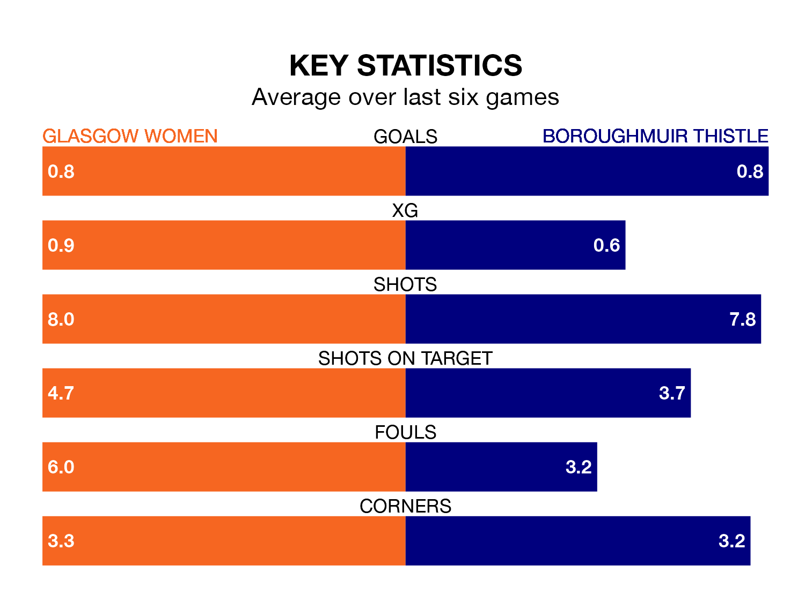

Struggling Glasgow Women face Boroughmuir Thistle at New Tinto Park on Sunday looking to build on a win in their last league outing.
After securing all three points with a 1-2 victory over Gartcairn Women on March 17, Glasgow sit seventh in SWPL 2.
They travel to play a Boroughmuir Thistle side fourth in the standings, who lost in their last match, 2-1 against Queen's Park Women.
Glasgow are in terrible form in SWPL 2, with no wins and two draws from their last six games.
With a win and a draw over that period, Boroughmuir Thistle's form is slightly better – they have taken four points from 18, compared to the home side's two.
In the last 10 years, Glasgow and Boroughmuir Thistle have played each other on nine occasions. Glasgow won seven of them, Boroughmuir Thistle one, and they drew once.
On average, Glasgow scored 2.2 goals and Boroughmuir Thistle 1.4 in those matches.
Their last meeting was on January 21, when Glasgow won 2-0 away.
With 20 goals in 21 games so far this season, Glasgow are the league's second-lowest scorers with 1.0 goals per game. And they are conceding more than average, letting in 42 goals at a rate of 2.0 per game.
The visitors are also below average scorers, with 1.8 goals per game, compared to a league average of 1.9. They have conceded 1.1 goals per game.
Updated: 12:39 (UTC), 26/03/24